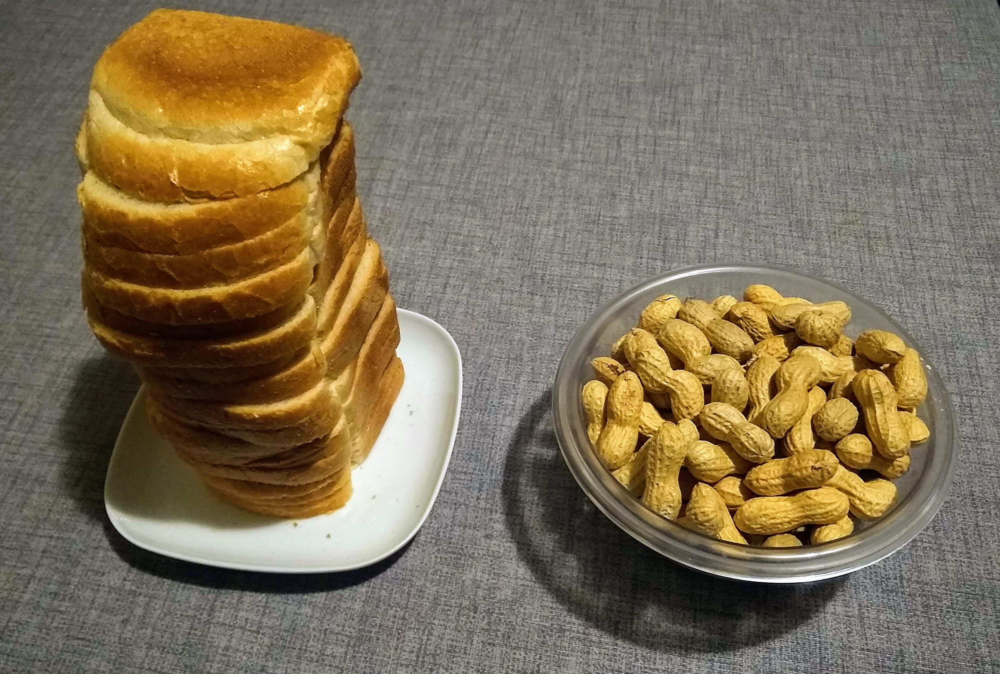

Gestione della memoria
Negli algoritmi di ordinamento che abbiamo visto, potreste aver notato che gli elementi della lista si scambiano molte volte tra di loro. Per avere un'idea, il bubble sort per ordinare una lista di soli 100 elementi usa circa 7000 scambi di elementi!
Ma nella pratica, all'interno della memoria, cosa succede quando scambio degli elementi?
La risposta è ovviamente... dipende. Se gli elementi sono piccoli, ad esempio interi o float, si possono scambiare direttamente i valori in memoria senza particolari problemi. Questo caso corrisponde a quello delle carte da gioco, per il quale è facile scambiare la posizione delle carte.
Ma non sempre le cose sono così semplici. Immaginiamo, nel mondo reale, di avere degli elementi più grandi da ordinare, ad esempio dei libri. Spostare tutti i libri da una parte all'altra dello scaffale può essere faticoso. Inoltre, in un certo momento, potrei avere i libri ordinati in un solo modo: o per autore, o per genere, o per titolo, etc. Se volessi avere più ordinamenti diversi dovrei fotocopiare tutti i libri e metterli in altri scaffali, molto scomodo 😑. Per ovviare a questo problema, le biblioteche prima dell'arrivo dei computer usavano degli schedari che contenevano delle piccole schede facilmente gestibili. Ogni scheda aveva un riferimento univoco ad un libro, in modo che si possa facilmente passare dalla scheda al libro; questo riferimento è come se fosse un filo invisibile che collega la scheda al libro.
Possiamo notare che l'operazione inversa non è possibile: non possiamo passare dal libro alla scheda. Per fortuna questo tipo di passaggio non è necessario.
Per la memoria succede qualcosa di molto simile.
Stack e heap
La memoria di un processo può essere considerata come un lungo nastro che in sequenza contiene tutte le celle di memoria.
| 0x00 | 0x01 | 0x02 | ... | 0x7f |
|---|---|---|---|---|
| _____ | _____ | _____ | _____ | _____ |
Per gestire le cose più agevolmente, il compilatore divide queste due aree di memoria in due zone distinte, chiamate stack (catasta, a sinistra nella foto) e heap (mucchio, a destra nella foto).

L'idea di base è che la stack è una memoria piccola, ordinata e veloce, che posso manovrare facilmente. Su Linux questa memoria è circa 8MB. Possiamo considerarla come lo schedario nel caso dei libri.
La memoria heap invece contiene il grosso delle informazioni: testo, foto, audio documenti, etc. La memoria heap può essere grande centinaia di megabytes, o anche gigabytes. Una volta caricati gli oggetti in memoria heap, questi rimangono fermi nello stesso punto finché qualcuno non li distrugge per liberare memoria. La memoria heap, come dice il nome, non è ordinata: le variabili vengono caricate in memoria dove c'è posto, senza un ordine preciso. Nell'esempio della libreria, corrisponde agli scaffali con dentro i libri.
Come nel caso dei libri e dello schedario, esiste un filo che parte dalle variabili nella memoria stack e arriva alle variabili nella memoria heap. Questo "filo" sarà argomento delle prossime lezioni.
Un'ultima precisazione: se questo filo per qualche motivo si dovesse rompere, non c'è modo di recuperarlo! la variabile nella memoria heap non sarà mai più raggiungibile. Questo in alcuni casi può essere un problema, in quanto rimarrà per tutta l'esecuzione del processo una zona in memoria occupata ma inutile; questa situazione ha un termine tecnico specifico, memory leak (sgocciolamento di memoria). Alcuni linguaggi invece hanno un sistema automatico per l'individuazione e la soluzione di questa situazione, ovviamente a costo di prestazioni inferiori.